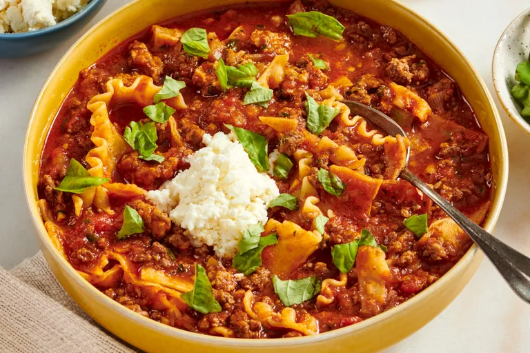

Home
lasagna-soup

Description
This incredible lasagna soup tastes exactly like a really good soup but is a very rich, very meaty tomato soup with tender noodles and ricotta cheese.
Ingredient
- Noodles
- Soup Base
- Cheese Mixture
- Garnish
Steps
- Fill a large pot with lightly salted water and bring to a rolling boil. Stir in lasagna noodles and return to a boil
- Preheat the oven. Line a baking dish with lightly greased
- Cut noodles in half lengthwise
- Serve in bowls with a scoop of cheese mixture, and sprinkle with freshly torn basil and italian parsley if desired.